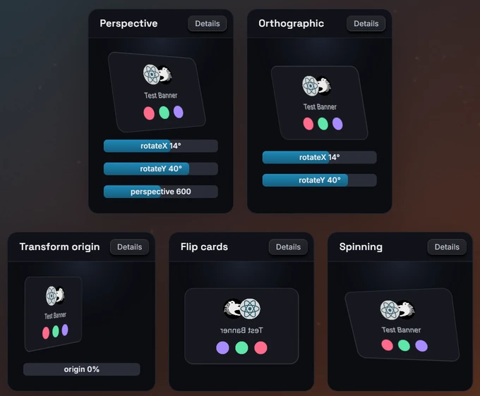

3D transforms
The transform3d style applies a 3D transform with optional perspective to
a node's rendered result: the node and its subtree are drawn as one flat
image, which is then rotated, moved and projected like a card in 3D space.
It is the bevy-react counterpart of CSS 3D transforms on a flattened group.
Layout is untouched, pointer input follows the transformed image, and
animating it never re-renders the content.
Usage
<node
style={{
transform3d: { perspective: 600, rotateX: 14, rotateY: 40 },
}}
>
<text>Tilted card</text>
</node>Fields
| Field | Type | Default |
|---|---|---|
perspective |
number (px) | none (orthographic) |
translateX, translateY |
number (px) | 0 |
translateZ |
number (px) | 0 |
rotateX, rotateY, rotateZ |
number (degrees) or a unit string | 0 |
scale |
number | 1 |
scaleX, scaleY |
number | scale |
origin |
{ x, y } |
{ x: "50%", y: "50%" } |
- Every field is optional; an omitted field stays at its identity value.
- Translations and
perspectiveare logical pixels. Rotations are angles: a bare number is degrees, and"1.5rad"or"0.25turn"also work. perspectiveis the distance from the viewer to the node's plane, like CSSperspective()on the element itself. Small values exaggerate depth, large values approach the orthographic look. Without it, rotations foreshorten but parallel edges stay parallel.translateZmoves the image toward the viewer (positive) or away from it, and is only visible withperspective.scaleXandscaleYoverridescalefor their axis.originis the pivot for scale and rotation and the vanishing point of the perspective. Each axis is a number (pixels from the node's top-left corner) or a percentage string of the node's border box. Bothxandyare required. Another unit falls back to the center with alengthwarning.
Order of operations
The order is fixed, whatever order the fields are written in: scale, then
rotateX, rotateY, rotateZ, then the translation, then the
perspective projection, all around origin. To compose transforms in
another order, nest nodes, each with its own transform3d.
How it renders
- The style's presence promotes the node to a
composited layer, even as an empty
{}. The subtree is rendered once into a texture at its normal, untransformed size, and the texture is drawn transformed. Changing or animating the transform reuses that texture. - The result is flat. It draws at the node's usual stacking position and
never intersects other UI in depth. A
transform3dinside another one is flattened into its parent's image, as with CSStransform-style: flat. - The back face is visible, mirrored. There is no
backface-visibility. - Edges are antialiased. A tilted or shrunk image is sampled from
mipmaps, so fine text and lines do not shimmer. An image scaled up (with
scaleabove 1 ortranslateZtoward the viewer) looks soft, because the content is captured at its untransformed resolution. - Siblings, the parent and scroll ranges do not move: like
transform, a 3D transform never triggers a relayout. - Other layer styles on the same node apply to the captured image before
it is transformed: a
filtertilts with the content, andopacityfades the whole card. AbackdropFilteris the exception: it stays in the node's untransformed box.
Pointer input
Hit testing follows the transformed image, not the layout box: hover and
press styles, the cursor, clicks and pointer events all land where the node
is drawn. The x/y of a pointer event are in the node's own,
untransformed coordinates, so a point on the tilted card reports the same
position it would report flat. Back faces are clickable too.
Avoid hover styles that move the node out from under the cursor: hover ends, the node moves back, hover starts again, and it oscillates (as in CSS).
Transitions
transition: { transform3d } eases the fields one by one:
<node
style={{
transform3d: { perspective: 800 },
transition: { transform3d: { duration: 300, easing: "easeOut" } },
}}
hoverStyle={{ transform3d: { perspective: 800, rotateY: 12 } }}
/>- A field present on one side only eases from or to its identity value.
perspectivesnaps when either side has none: there is no numeric value for "orthographic". Keep the sameperspectivein every state.origineases between values of the same unit and snaps otherwise.- A
transform3dinhoverStyle,pressStyleorfocusStylereplaces the base one as a whole; repeat the fields you want to keep. - Removing
transform3daltogether snaps and drops the layer. Keep an identity{}in the base style when the node should ease back.
The transform is applied when the image is drawn, so an eased frame costs one textured quad, however large the subtree.
Animated fields
Every field, including origin.x and origin.y, accepts an inline
{ animated } binding to a shared value:
import { useEffect } from "react";
import { useSharedValue, withRepeat, withTiming } from "bevy-react";
function FlipCard() {
const flip = useSharedValue(0);
useEffect(() => {
flip.value = withRepeat(withTiming(180, { duration: 600 }), {
reverse: true,
});
}, [flip]);
return (
<node
style={{
transform3d: { perspective: 700, rotateY: { animated: flip } },
}}
/>
);
}- Bound rotations are degrees; bound translations,
perspectiveand origin axes are pixels. - Fields left static keep their values next to bound ones.
- Any binding parks
transition: { transform3d }on that node. - Bindings work in the base
styleonly.
Limits
- Hit testing follows the transformed image for the mouse only. Touch input still hits the node's untransformed layout box.
- UI that the transformed image covers still receives pointer events where it is covered; the image does not block them.
- With a
transform3dinside another one, pointer input is mapped through the nearest transformed ancestor only. - No depth sorting,
transform-style: preserve-3dorbackface-visibility. - Content scaled up past its layout size looks soft.
- The layer limits apply: content painted outside the node's border box is
cut off, and inside a
<surface>the node renders untransformed. See Layers.

See transform3d in the
style reference.